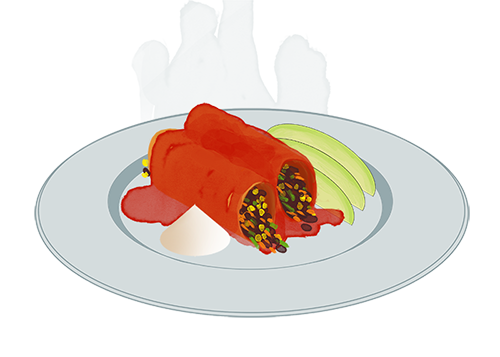

Vegetarian DSW Enchiladas
serves 4, but also makes great leftovers!


serves 4, but also makes great leftovers!
-Ingredients-
- 10-12 large flour tortillas (give or take)
- 3 cups mixed frozen vegetables
- 2 cans beans (black, pinto, kidney...)
- 1 large can red enchilada sauce OR for extra school lunch authenticity just use salsa
- 1 cup grated cheese
- sour cream to serve
- Preheat oven to 350°.
- Drain beans in a colander, add mixed vegetables and wrinse with water.
- Pour a little bit of enchilada sauce into the bottom of a glass baking pan, then line up the tortillas in "U" shapes until the pan is filled. They should stay in place on their own.
- Spoon in the bean-vegetable filling so that it is equally portioned out among the tortillas.
- Roll the tortillas up and rotate them so that they don't unravel..
- Cover with enchilada sauce and grated cheese.
- Bake for about 25 min until the cheese is bubbly on top and the insides are thoroughly heated.
- Serve with sour cream. Other good toppings are hot sauce, avocado and cilantro. ¡Que aproveche!